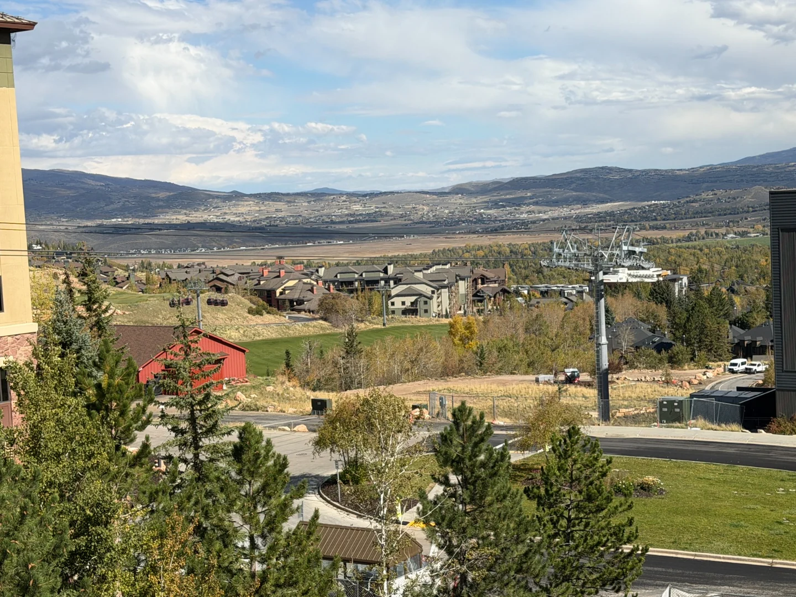

Choosing between Canyons Village and Deer Valley for a family week is usually presented as a question of style: one polished and quiet, the other big and lively. It is actually settled by a rule. If anyone in the family rides a snowboard, Deer Valley is out before the other comparisons matter — and that still holds for 2026-27, including the new terrain it has just opened.

Start with the snowboard rule
Deer Valley is skiers only. It is one of a handful of US resorts that has never lifted the restriction, and going into the 2026-27 season its own rules still list snowboards among the devices that are not approved. The rule applies everywhere, including the expansion terrain it has just opened.
Park City Mountain, the resort Canyons Village sits at the base of, allows snowboarding everywhere. So for a family with one snowboarding teenager, or a child who wants to learn to ride rather than ski, the comparison ends here. Everything below is for families who are all on skis.
Two mountains, two different sizes
Park City Mountain is the larger by a wide margin — around 7,300 skiable acres across two connected base areas, a 10,023-foot summit and a 3,226-foot vertical drop. Deer Valley has grown substantially for 2026-27: the new Hail Peak Express lift opens from Deer Valley East Village, adding about 200 acres and seven runs and taking it to a reported 4,500 acres, 209 runs and 32 lifts.
The caveat is that the East Village Lodge serving that new terrain is reported as targeting the 2027-28 winter, so a family skiing it this season is skiing an unfinished base. Our guide to the differences between Deer Valley and Park City Mountain covers the skiing, and the Canyons Village lift map guide explains which lifts let a mixed-ability group split and meet again.
Does one pass cover both?
No, and that is the second thing that decides a family week. Park City Mountain is on the Epic Pass. Deer Valley is not on Epic at all — it is on the Ikon Pass.
For 2026-27, a full Ikon Pass gives up to seven days at Deer Valley, and each visit needs a reservation booked ahead rather than simply turning up. Reports conflict on whether the cheaper Ikon Base Pass still includes Deer Valley this season, so confirm that before buying on the assumption. Deer Valley also caps the day tickets it sells and advises buying online in advance, particularly over holidays.
Park City Mountain has no equivalent daily cap, but the Epic Local Pass is blacked out there on 13 and 14 February 2027, the opening weekend of Presidents' Week. The full Epic Pass is not. Our lift tickets and Epic Pass guide covers which product suits which trip.

Ski school and childcare for young children
Neither resort locks out a family with small children. Both take children into lessons from around age three, and both run a licensed childcare centre for children too young or unwilling to ski.
Deer Valley groups children by age first and then by ability, and has a long-standing reputation for small beginner classes. Park City Mountain runs its children's centre at Canyons Village, taking children from a few weeks old, with group lessons split between the youngest ages and a wider three-to-fourteen band. Class sizes and age bands quoted by third parties vary, and Park City's own pages are not always consistent, so confirm the programme and the helmet requirement when you book.
The practical difference is not the quality of either school. It is that a family split across abilities can put a beginner into lessons at Canyons Village, send a snowboarding teenager to a terrain park and still meet for lunch on one pass. Our guide to Park City with kids and ski school covers how that day runs, and spring break skiing with kids covers the late-March version.
Where you stay and what you drive
There is no lift link between Park City Mountain and Deer Valley. A family based at Canyons Village that wants to ski Deer Valley drives or buses around, parks, gets everyone into boots in a car park rather than in the villa, and reverses it at the end of the day. Our own estimate for that drive is twenty to thirty minutes outside peak traffic; no published figure exists.
Once in a week, that is an outing. Daily, with a lesson check-in time, it becomes the shape of the holiday. Stay at Deer Valley instead and the problem reverses: the Park City Mountain days become the drive.
Staying slopeside at Canyons Village, a short walk from the gondolas, removes the drive from five days out of seven. Our guide to Canyons Village versus the Park City base compares the two sides of the same resort, and the homepage layout section shows how the villa is laid out for a family.
The side-by-side, for a family week
| Factor | Canyons Village | Deer Valley |
|---|---|---|
| Snowboarding | Allowed everywhere | Not allowed anywhere |
| Skiable acres | About 7,300 across two bases | About 4,500 after the 2026-27 expansion |
| Pass system | Epic Pass | Ikon Pass, reservation per visit |
| Day ticket supply | No published daily cap | Capped, pre-purchase advised |
| Lessons from | Around age 3, plus infant childcare | Around age 3, plus childcare |
| Daily drive from the villa | None, short walk to the gondolas | Roughly 20 to 30 minutes each way |
| Mixed abilities on one pass | Beginners, parks and long blues together | Skiers only, no park riders |
For most families the answer falls out of two lines of that table. If anyone rides, it is Canyons Village. If everyone skis and will accept a drive most days, Deer Valley earns the look.
Where this guide is written from
We own three Premier Two-Bedroom Villas inside Westgate Park City Resort, in Canyons Village at the base of Park City Mountain. Each is 1,100 square feet — two king bedrooms, two queen sleeper sofas, sleeping eight — with a full kitchen, a kitchenette in the lock-off studio and two bathrooms with walk-in showers. Across all three, a group of up to 24 can stay in one resort.
We rent directly, owner to renter. Our open weeks for 2027 are Presidents' Week, 13 to 20 February, and spring break, 21 to 28 March. One enquiry, one person who answers it.
Common questions
Can you snowboard at Deer Valley?
No. Deer Valley is skiers only, and heading into the 2026-27 season its rules still list snowboards among the devices that are not approved. The restriction covers the whole resort, including the newly opened expansion terrain reached by the Hail Peak Express lift. Park City Mountain allows snowboarding across all of its terrain. For a family where one person rides, that single rule decides the week.
Does one lift pass cover both Park City Mountain and Deer Valley?
No. Park City Mountain is an Epic Pass resort and Deer Valley is not on Epic at all. Deer Valley is on the Ikon Pass, where a full Ikon gives up to seven days and each visit needs a reservation booked in advance. Reports disagree on whether the Ikon Base Pass still includes Deer Valley for 2026-27, so check the pass page before buying on that basis.
Which resort is better for a family with young children?
Both take children into lessons from age three and both run a licensed non-ski childcare centre, so neither locks a family out. Deer Valley has a long-standing reputation for small beginner classes and a calmer mountain. Park City Mountain suits mixed-ability families better: snowboarders, park riders and adults wanting long intermediate runs all ski one pass on one mountain. Ages and class sizes quoted by third parties vary, so confirm the current programme with the resort.
How do you get from Canyons Village to Deer Valley?
By road. There is no lift connection between Park City Mountain and Deer Valley, so a family staying at Canyons Village drives or buses around, parks, and reverses that at the end of the day. Our own estimate for the drive is twenty to thirty minutes outside peak traffic; no published figure exists. With children, gear and a lesson check-in time, budget more than the drive alone suggests.
What is new at Deer Valley for the 2026-27 season?
The Hail Peak Express lift opens from Deer Valley East Village, adding about 200 skiable acres and seven new runs, taking the resort to a reported 4,500 acres, 209 runs and 32 lifts. The East Village Lodge is reported as targeting the 2027-28 winter, so a family skiing the new terrain this season is skiing an unfinished base area.